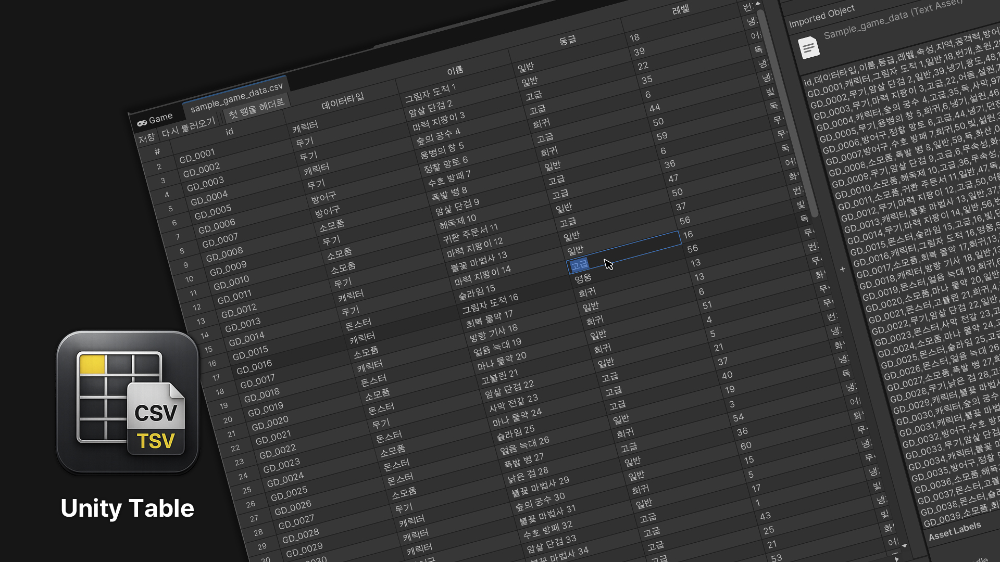

Tabular Editor
Tabular Editor는 Unity 안에서 CSV와 TSV 파일을 편집하는 UI Toolkit 기반 에디터입니다. 지원되는 에셋을 더블클릭해 표 형태로 열고, 익숙한 스프레드시트 조작으로 셀을 편집한 뒤 원본 텍스트 파일에 저장할 수 있습니다.

주요 기능
- Project 창에서
.csv와.tsv에셋을 바로 엽니다. - 키보드와 마우스로 셀 이동, 범위 선택과 편집을 수행합니다.
- 원하는 위치에 행과 열을 삽입하거나 삭제합니다.
- Excel, Google Sheets, Numbers와 사각형 범위를 복사하고 붙여넣습니다.
- 대소문자 구분 옵션과 함께 셀 내용을 검색합니다.
- Unity의 Scene Undo와 분리된 표 전용 Undo/Redo를 제공합니다.
- 저장할 때 원본 인코딩, 개행, 마지막 개행과 CSV 인용 규칙을 보존합니다.
Tabular Editor는 Editor 전용 저작 도구입니다. 런타임 테이블 API를 추가하지 않으며 외부 패키지도 요구하지 않습니다.